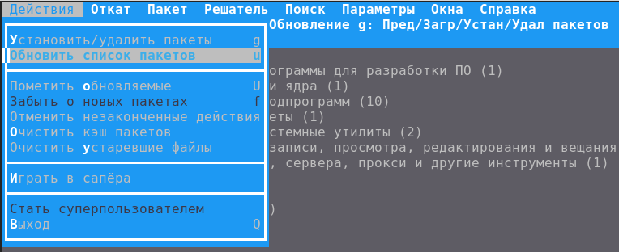
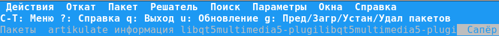
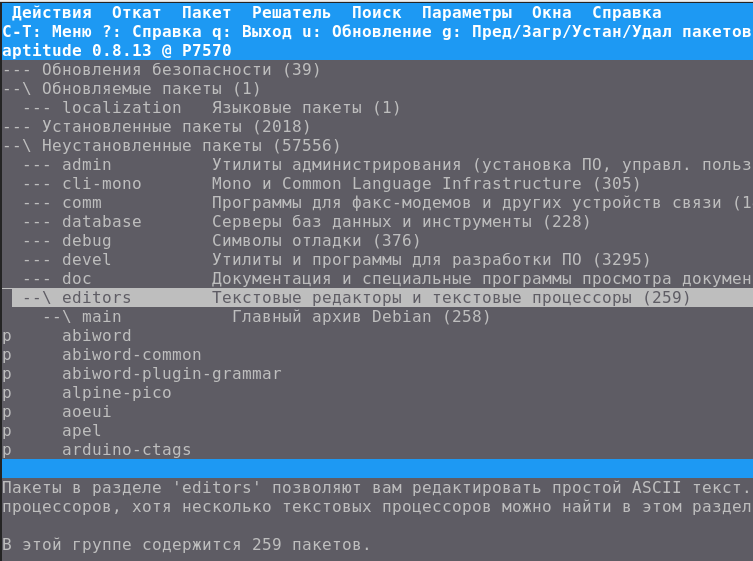
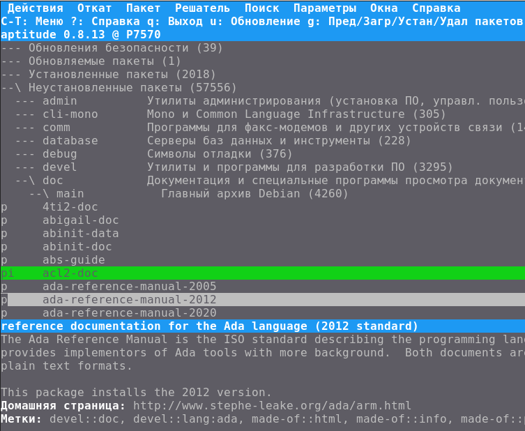
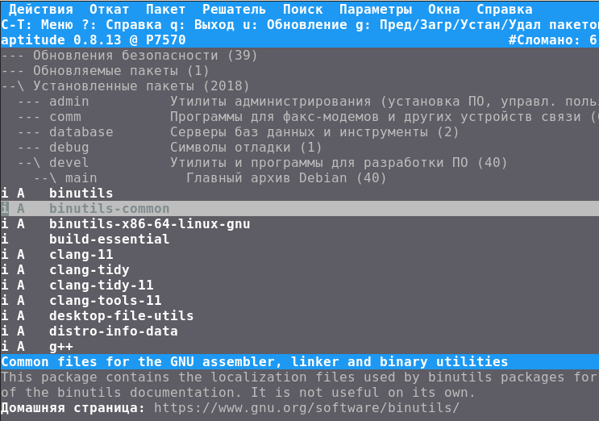

В основанных на стандарте DEB дистрибутивах Linux традиционно присутствует два высокоуровневых пакетных менеджера: apt-get и aptitude. Набор программ apt-* постепенно замещается программой apt, а aptitude как был, так и остается в своем первозданном виде.
И можно сказать честно, что интерфейс у aptitude - та еще загадка природы. То ли марсиане, то ли рептилоиды с планеты Нибиру заставили авторов сего пакетного менеджера сделать ТАКОЙ интерфейс. Забегая вперед можно сказать, что в нем есть своя, инопланетная логика. Но постичь ее дано не каждому, тем более что марсиане и рептилоиды строго следят за тем, чтобы во всемирной Паутине не появлялось хоть сколько-нибудь вменяемого описания работы этой загадочной программы. И если материал про aptitude где-то и появляется, то он сразу же изымается из Сети еще до того, как основные поисковики успевают его проиндексировать.
Если вы читаете эту статью, то скорее копируйте ее на свои локальные средства хранения информации, потому что уже тот факт, что вы нашли ее - большая удача. И никто не гарантирует, что спустя какое-то время, может минуту, может день, эта информация об aptitude не будет удалена или искажена до неузнаваемости. Вы предупреждены.
* * *
Перед тем, как пользоваться aptitude, надо понять, зачем этот инструмент вообще нужен. Ведь есть система управления пакетами apt, которая является надстройкой над dpkg. Зачем нужна еще одна система управления пакетами? Чтобы это выяснить, надо понять ситуации в которых просвещенные пользователи Линукса берутся за этот инструмент:
... бывает такое, что один-два пакета сломаны и пытаются удалить полсистемы. И без aptitude я вообще не представляю, как сделать «обновить всё, но не обновлять то, то и то». Чтобы иметь возможность сначала визуально посмотреть, что именно что ломает, а потом просто убрать эти пакеты из списка обновлений, обновив всё остальное ...
... когда ты нажимаешь первый раз "g" в aptitude, ты можешь просто пробежаться по списку и по категориям увидеть, что обновляется, что добавляется (и это всё разным цветом подсвечено) и что удаляется, а не единое сплошное полотно одноцветного текста, где можно просто не заметить, что именно происходит. И в этом списке ты опять же можешь отменить ненужные удаления или добавить дополнительно что-то для установки, после этого нажать "q", "g" и сравнить список по-новому. Ты точно знаешь, что ставится, что удаляется, что от чего зависит, и можешь вручную играться с установкой-удалением нужной версии программы или библиотеки.
В общем получается, что aptitude представляет собой интерфейс, в котором вначале подготавливаются действия с пакетами, которые будут выполнены, проверяется результат этих действий, после чего можно давать команду выполнения действий. Это отличается от apt-подхода, в котором дается команда на выполнение действия, которая (уже после того как команда дана) проанализирует изменения, выяснит проблемы и предложит один путь решения проблемы (даже если будет снесена половина системы), а пользователю остается либо согласиться с изменениями, либо нет.
Теперь что касается интерфейса aptitude. Он сделан так, чтобы его было максимально сложно понять, и чтобы он сразу вызывал чувство эстетического отторжения. Это необходимо, чтобы земляне, увидев его, захотели сразу выключить программу и не возвращаться к ней больше. Вот как выглядит строка подсказки клавиатурных команд, видимо, предназначенная для новых пользователей:
C-T: Меню ?: Справка q: Выход u: Обновление g: Пред/Загр/Устан/Удал пакетов
Ну-ка, быстро скажите, что нужно нажать, чтобы запустить обновление? "u" или "g"? А что это за "C-T" в верхнем регистре?
Ничего не стоило авторам написать более понятно, например:
Меню: Ctrl+t, Справка: ?, Выход: q, Обновление: u, Предл/Загр/Уст/Удал: g
Такой вариант и помещается в ширину 80 символов, и читать проще. Да и вообще, чтобы не путать человека, можно было обойтись подсказкой "Меню: Ctrl+t", и все. Остальные горячие клавиши видны в самом меню у соответствующего пункта:

... но авторы посчитали, что строка подсказки с внеземным форматированием должна постоянно присутствовать в интерфейсе, чтобы все время напоминать пользователю об инопланетном происхождении данной утилиты.
Неразрешимой загадкой остается выбор горячей клавиши для вызова меню. Почему для вызова меню используется Ctrl+t, а не более логичное Ctrl+m, или привычное всем F10? Не стоит пытаться это понять. Просто надо осознать, что за неимением лучшего все равно придется пользоваться тем, что есть. В какой-то момент, видимо, одному из разработчиков надоело это странное сочетание, и он добавил вызов меню по F10. Но никому об этом не сказал, и нигде в интерфейсе об этом упоминания нет. Но те, кто обладают тайным знанием, могут вызывать меню простым и удобным способом. Только никому об этом не говорите!
UPD: В глубинах документации, в разделе "User manual" можно найти обрывки древних знаний, в которых видно, что кто-то пытался сообщить пользователям, что для вызова меню можно нажимать клавишу f10 (видимо, это какой-то аналог F10), но потом его поставили на место, и объяснили, что пользователям это не нужно, и для вызова меню они должны вначале разгадать ребус "C-T".
Адекватности первому разделу добавляет пункт "Играть в сапёра" (что-а?). Этот пункт подчеркивает, что данное программное обеспечение не какое-то там наколенное поделие, а серьезное ПО для управления пакетной базой в ОС Linux. Авторы как бы говорят, что если пользователь овладеет искусством не натыкаться на скрытые мины и научится свободно ходить по минным полям, то овладеть искусством установки программного обеспечения в Linux без разрушения всей системы уже не составит труда.
И вообще, отбросьте уже вашу логику и претензии к интерфейсу куда-нибудь подальше! Не пытайтесь понять, почему автор сделал ширину подсветки выбранного пункта такой, что она вылазит на левую границу рамки меню. Ну не попал и не попал! Скажите спасибо, что выбор пункта вообще работает, и вас не заставляют заучивать наизусть очередные клавиатурные комбинации!
Под строкой подсказки располагается еще одна (третья) служебная строка, назначение которой понятно не сразу. При запуске в ней отображается версия aptitude и имя компьютера. Но в процессе работы она волшебным образом то исчезает, то появляется, то заменяется странным набором самоподобной информации:

Эта каша из слов и символов, по задумке, показывает последовательность действий, которые выполнял пользователь и имена пакетов, с которыми он работал. Информативности в таком представлении мало, но что вы хотели от программы, которая предоставляется вам бесплатно? Просто научитесь уже ей пользоваться, мерзкие глупые людишки.
Под тремя строками с синим фоном находится дерево разделов пакетной базы. Сразу при запуске, aptitude находится в режиме навигации по данному дереву:

И сразу возникает вопрос: если вызвать меню, то как из него вернуться в режим навигации по дереву? Или, если сформулировать по-другому: как закрыть меню? Традиционная кнопка отмены действия ESC не работает. Пункта "Закрыть меню" в меню нет. Что же нужно нажать? Ну, давайте, это же так просто!
Не нужно быть гением, чтобы понять, что для закрытия меню надо нажать F10. Ну да, ту же самую кнопку, что используется для открытия меню. Видите, как удобно придумано? Оп, оп, и открываем и закрываем, оп, оп, вот так! Всем понятно, все запомнили.
Далее, рано или поздно, у пользователя возникнет вопрос: я зашел в режим просмотра информации о пакете, я зашел в справку, я зашел в настройки... скажите, как вернуться обратно? Как, в конце концов, выйти из "Минера"? Кнопка ESC, традиционно, не работает. Что делать?
Фишка в том, что каждый новый режим порождает новое виртуальное "окно". Третья строка (та самая строка с кашей из слов и символов на синем фоне) - это не просто история действий. Это список порожденных окон, которые были созданы при входе в новое действие. Самое простое, чтобы покинуть действие и вернуться "где был" - это нажать кнопку "q" (от слова quit). То есть, "q" - это не просто выход из программы, это еще и выход из режима. А если хочется чего-то необычного, то кнопками F6/F7 можно переключаться между порожденными окнами. В любом случае, действие кнопки "q" чем-то напоминает действие кнопки ESC, пользоваться ей можно примерно так же, тем более, что на клавиатуре она то же находится где-то там слева-вверху.
* * *
После того, как первый шок от интерфейса aptitude прошел, можно двигаться дальше.
Базовая навигация:
Поиск:
Чтобы получить более подробную информацию о пакете, надо нажать на нем кнопку Enter. Да, в навигации по пакетной базе кнопка Enter контекстно выполняет разные функции:
В информации о пакете так же можно выбрать зависимый пакет и нажать на нем Enter. Произойдет порождение нового окна с информацией об этом пакете. И так можно продолжать столько, сколько нужно. Чтобы выйти из этих вложений, как было сказано раньше, надо нажимать клавишу "q".
* * *
Когда курсор (засветка) стоит на необходимом пакете, его можно пометить для установки. Делается это кнопкой + (Плюс). Выбранный пакет выделится зеленым цветом. Если нужно снять пометку, тогда нажимается кнопка — (Минус).
Естественно, выбрать пакет для установки можно только если данный пакет еще не установлен. Имена неустановленных пакетов пишутся серым цветом. В самом левом столбце будет находиться загадочный символ "p" (видимо, от слова package):

Пакет, помеченный для установки (инсталляции), помечается символами "pi" (видимо, от слов package install).
Если пакет уже был без ошибок установлен, то его имя пишется белым цветом, а слева от него стоит символ "i" (от слова installed). Иногда рядом с "i" может стоять символ "A" (от слова Automatic), и он означает, что пакет был установлен автоматически по зависимостям от других пакетов:

Если нужно пометить установленный пакет для удаления, надо навести на него курсор и нажать Минус "-". Цвет пакета станет фиолетовым. Отменить пометку на удаление можно клавишей Плюс "+".
Следует понимать, что все вышеописанные действия не выполняют над пакетами никаких действий, а только происходит пометка пакетов, чтобы затем эти действия совершить. Как запустить на исполнение действия, будет сказано далее. А пока следует сказать еще вот о чем:
Внимание!
В процессе навигации и пометки пакетов на установку или удаление, может создасться ситуация, что запланированные изменения будут приводить к ошибке. Информация об этом будет выведена красным цветом внизу экрана. Естественное желание пользователя - отменить эти запланированные действия. И в aptitude для этого имеется команда:
Меню - Действия - Отменить незаконченные действия
Однако, aptitude зачастую все равно продолжает помнить запланированные действия. И даже если выйти из aptitude и снова в нее зайти, эти действия вспомнятся. Вопрос: как же тогда отменить запланированные действия, если встроенная в саму программу функция не работает?
Для этого можно сделать следющее. Надо выйти из aptitude и удалить все файлы в каталоге /var/lib/aptitude:
rm -f /var/lib/aptitude/*
После такой очистки aptitude забудет все изменения, и можно будет продолжить работу с чистого состояния.
Дописать...